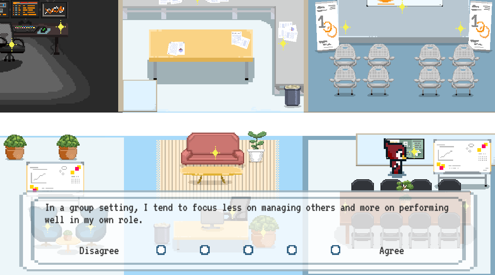

Prospex
Prospex is a gamified user experience aimed towards introducing potential tech career paths and resources to UChicago students. I built this platform collaboratively with three other UChicago students over the course of a month during the UChicago Tech Community Challenge, which was a competition for students to build tech solutions to help fellow UChicago tech students.

On the Prospex platform, students can navigate as a character around a 2D platform game environment to answer questions about their interests and personality. We had surveyed over 80 career professionals in five career fields using these same questions, and after students have answered all questions, we use the K-Nearest-Neighbors algorithm to predict their career interests. Students would then receive a profile of their suggested career interests based on their answers and a brochure packed with resources about suggested readings, career preparation, and additional learning resources specific to that field.

My Role
I served as team lead for Prospex, and oversaw all aspects of the project, including coding the platform on Unity, conducting research by reaching out to career professionals, and creating pixel art assets for the platform’s visuals.
The Challenge
Going through college at UChicago, I’ve noticed that most of the tech community around me are grinding Leetcode to get an internship in software engineering. I rarely hear anyone going into roles like product management or UI/UX.

As a leader and mentor in several tech and startup clubs on campus, when I introduce these roles to students, almost all of them are not aware of what they are. After running career awareness workshops or mentorship sessions, I’ll get people reaching out to learn more about these different career paths. It’s not that people are not interested in these other career prospects, it's that we have a fundamental lack of exposure to them. As more people reached out to me, I created brochures for both entrepreneurship resources on campus and product management career preparation resources so that I could distribute them to the people who were interested. However, I felt like there were even more opportunities, like UI/UX and computer science research, and even more UChicago students beyond my personal scope, who would benefit from learning more about diversified paths in tech.

That was the problem I proposed to our team of four. Each of us has also experienced being interested in these types of fields, but having sparse resources and guidance to dive deeper into them. We aimed to introduce more paths in tech that UChicago tech students can take beyond software engineering, including product management, UI/UX, computer science research, quantitative finance, and tech startups. To that end, we built Prospex over the course of a month and won the Most Impactful award from UChicago’s Tech Community Challenge.